Для того, чтобы писать программы - нужна среда разработки. В этом уроке мы подробно рассмотрим, как установить и настроить эту среду разработки.
В этой статье много скриншотов и инструкций. Учитывайте, что версии ПО постоянно меняются и у вас все может выглядеть по-другому и версии могут быть другими.
Среда разработки + Android SDK
В среде разработки мы будем создавать программу и получать на выходе готовое приложение. Сейчас существует несколько сред разработки, мы выберем рекомендуемую Google Android Studio.
Скачиваем самую последнюю версию Android Studio.
Итак, скачали exe-файл. Запускаем его. Жмем Next.
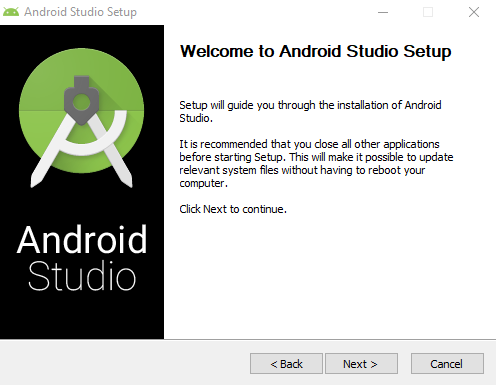
Жмем Next.
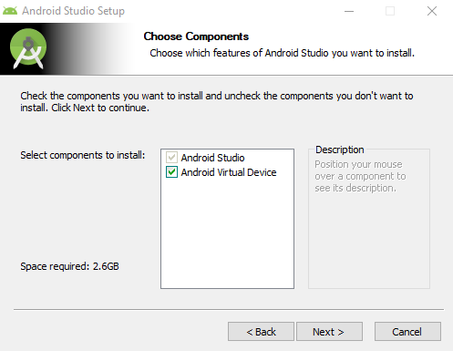
Выбираем путь установки. Жмем Next.
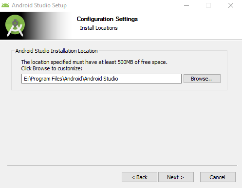
Жмем Next.
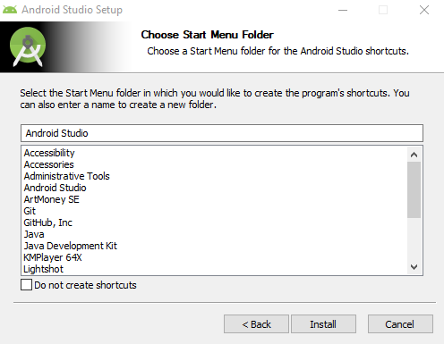
Ждём окончания установки. Жмем Next.
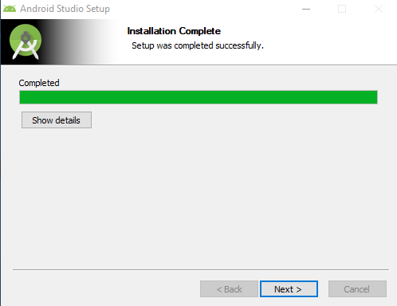
Установка завершена. Жмем Finish.
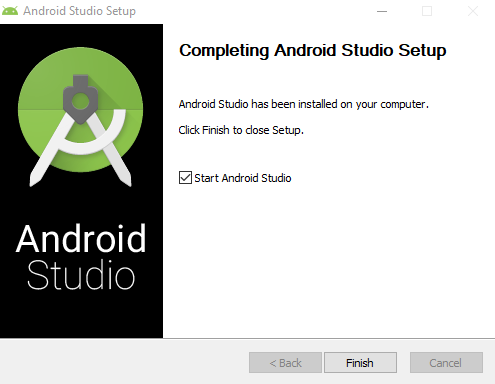
Жмем Next.
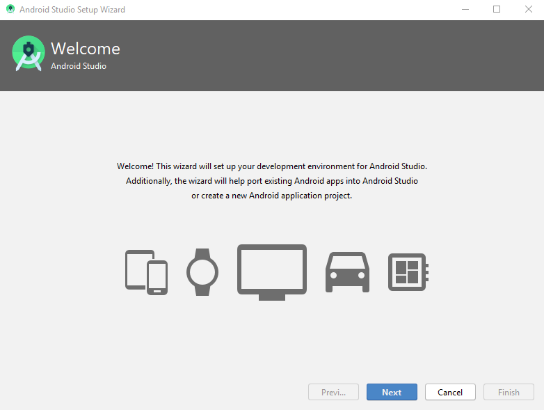
Выбираем пользовательскую установку. Жмем Next.
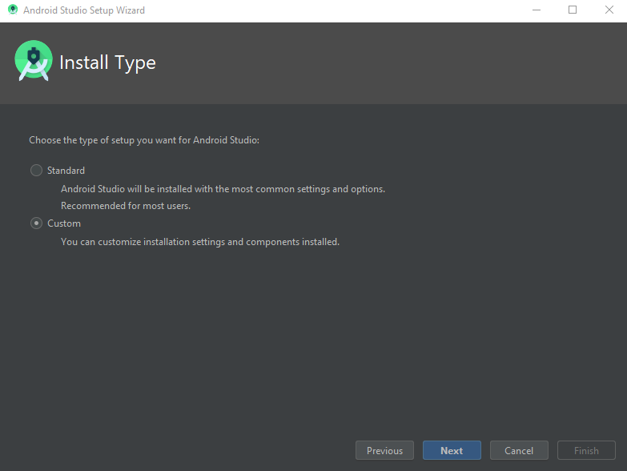
Указываем путь, где будет храниться JRE. Жмем Next.
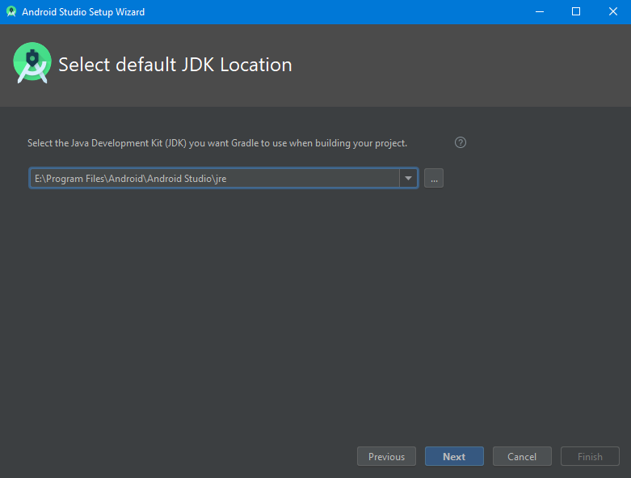
Выбираем тему приложения. Жмем Next.
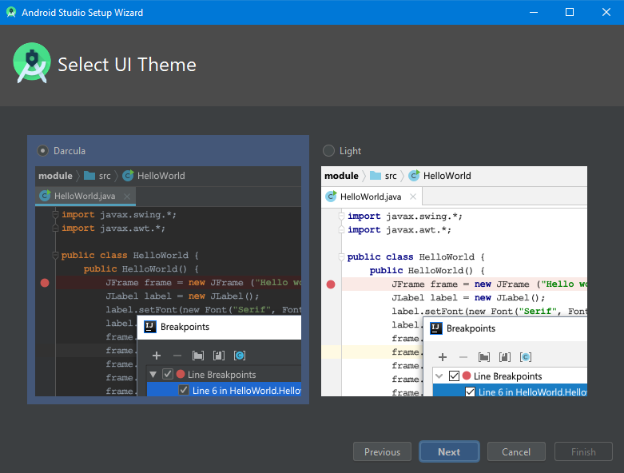
Выбираем интересуемые пункты и указываем расположение SDK. Жмем Next.
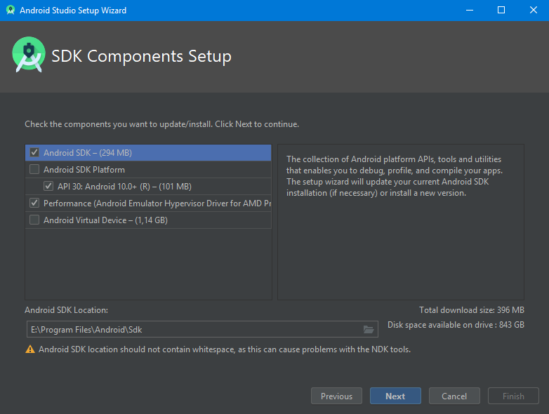
Жмем Next.
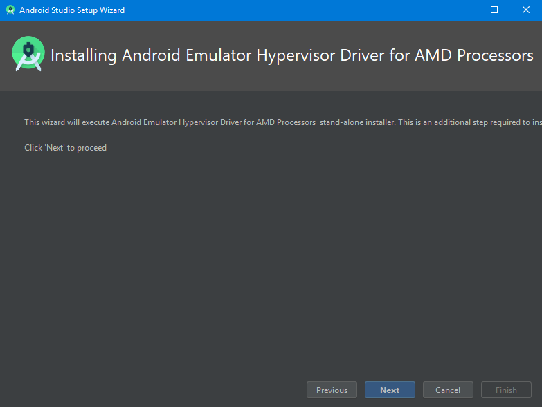
Жмем Finish.
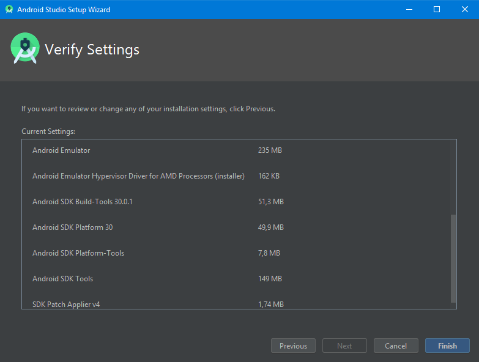
Жмем Finish.
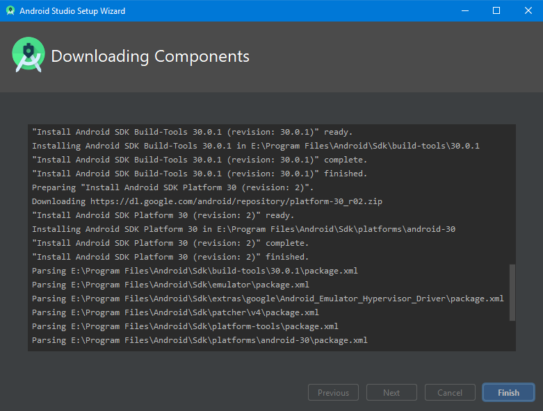
Установка успешно завершена.

После выполнения этих шагов мы получили среду разработки, с помощью которой можно писать Android-приложения. Если что-то не получается или выдает ошибку - попробуйте поискать в Интернете, наверное вы не первый сталкиваетесь с такой проблемой и в сети уже есть описание решения.